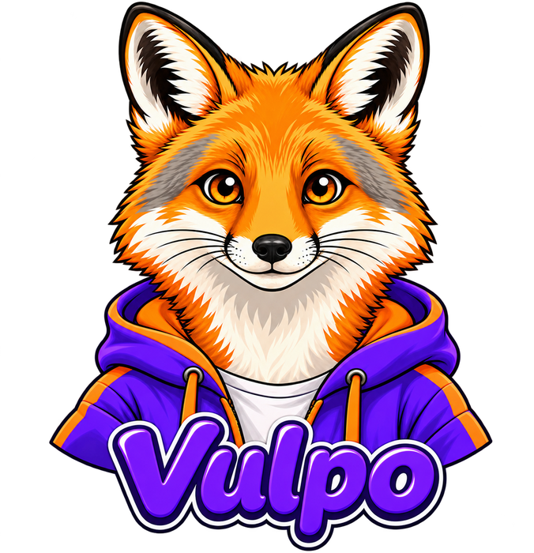
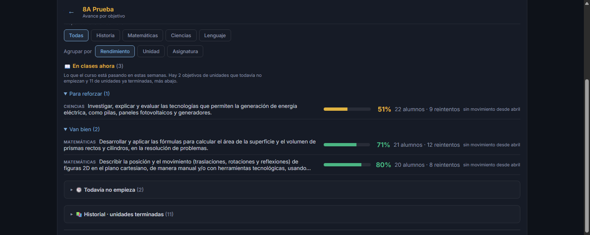
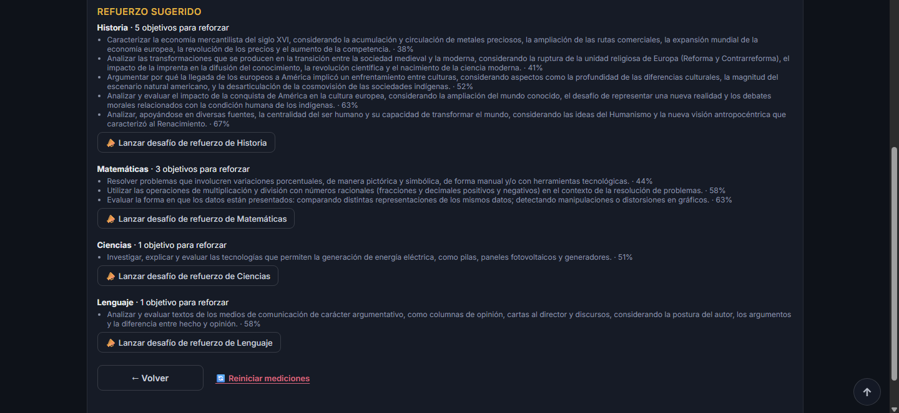
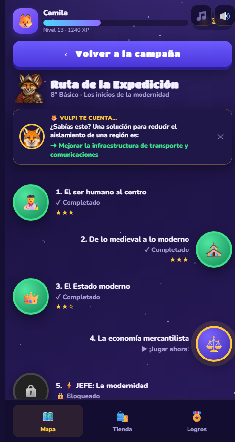
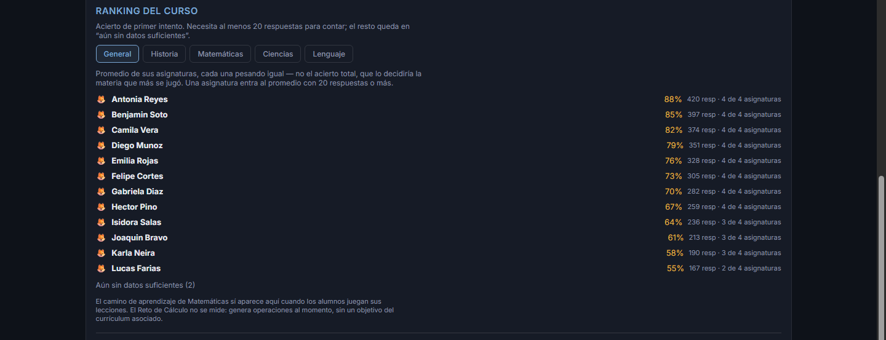

Plataforma educativa alineada al currículum chileno, de 3° a 8° básico, con sus cuatro asignaturas, y un panel que convierte lo que juegan tus alumnos en un mapa de aprendizaje objetivo por objetivo.
Prueba el curso que te interesa: 3° · 4° · 5° · 6° · 7° · 8° básico
Tu curso repasa el año jugando y tú sabes, objetivo por objetivo, qué reforzar antes de la próxima evaluación — sin corregir una sola prueba. Contenido alineado a las Bases Curriculares, más un panel que convierte el juego en información útil.
VULPO se construye desde marzo de 2026 y se revisa sin pausa: cada banco de preguntas pasa por un profesor antes de publicarse, y el contenido sigue creciendo curso a curso.
De 3° a 8° básico, cada uno con sus cuatro asignaturas: Historia, Matemática, Ciencias y Lenguaje, con los Objetivos de Aprendizaje del año completo.
Escritas objetivo por objetivo desde las Bases Curriculares y aprobadas por un grupo de profesionales, apoyados con Inteligencia Artificial, objetivo por objetivo, en los seis cursos. El 100% del banco, revisado.
El panel mide el dominio de cada Objetivo de Aprendizaje del curso, no solo cuánto juegan.
El colegio crea sus cursos, el profesor inscribe a sus alumnos y cada uno recibe un código personal. Los alumnos juegan desde casa, en su teléfono —como una tarea que sí quieren hacer— y el profesor llega a clase sabiendo qué reforzar. No requiere cambiar tu regla sobre el celular en la sala, y no hay que instalar nada.
VULPO es un cuestionario interactivo con reportes inmediatos — la misma familia de herramientas que el propio Ministerio de Educación reconoce como apoyo válido de la evaluación formativa. Y va más allá: convierte cada respuesta en un mapa de dominio objetivo por objetivo para el profesor.
La evaluación formativa acompaña el aprendizaje mientras ocurre, no al final. Tu curso repasa el año, clase a clase, desde casa.
El Decreto 67 recomienda que la evaluación formativa no se califique. VULPO no pone notas: entrega información para reforzar, no para calificar.
El MINEDUC destaca que la evaluación formativa ayuda especialmente a los estudiantes que necesitan más apoyo. El panel muestra justo a quiénes y en qué.
El mapa de dominio ordena los objetivos de aprendizaje de peor a mejor logro, y dice quiénes necesitan apoyo en cada uno. Es una brújula para decidir qué reforzar en clase: no sirve para calificar, y no está pensado para eso.
Las imágenes de esta sección corresponden a un curso de demostración: los nombres y los porcentajes son simulados.

DATOS SIMULADOSAvance por objetivo: lo que está más flojo, primero.

DATOS SIMULADOSEl panel propone qué reforzar y lo lanza al curso en un clic.
El profesor lanza un desafío sobre el objetivo que está flojo y le llega a todo el curso.
Quién jugó esta semana y quién no ha entrado nunca.
Los compañeros compiten con datos de verdad, por curso y por asignatura.
El alumno no entrega correo, RUT ni datos personales: entra con un código anónimo que le da el colegio. Pedimos lo mínimo, no usamos sus datos para otra cosa, y la información del curso es del colegio. Sin publicidad y sin rastreadores de terceros.
VULPO nació porque un papá chileno quiso ayudar a su hijo de 8° básico a estudiar con los medios que ellos ya usan: el teléfono, en casa.
Y mientras tanto está repasando los objetivos de aprendizaje del año. Sin darse cuenta, está aprendiendo.
Se juega desde el teléfono en casa, en vertical, y cada capítulo toma unos minutos.
Ver una muestra (8° básico)

DATOS SIMULADOSEl ranking de su propio curso: eso es lo que los hace volver.
¿Te gustaría que el colegio de tu hijo lo tuviera? Escríbenos y te ayudamos a proponérselo.
Instalamos un curso de prueba. En pocas semanas el panel ya muestra el mapa de aprendizaje de tu curso con datos reales, y decides con evidencia, no con una promesa.
Cuesta menos que una hora de reforzamiento particular por alumno — y entrega el año completo, en cuatro asignaturas. Se licencia por curso: 3°, 4°, 5°, 6°, 7° u 8° básico.